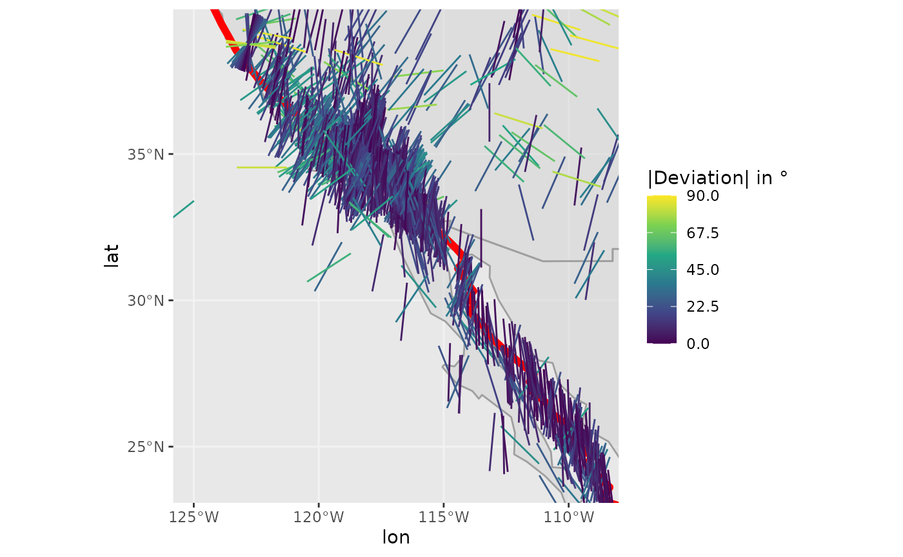
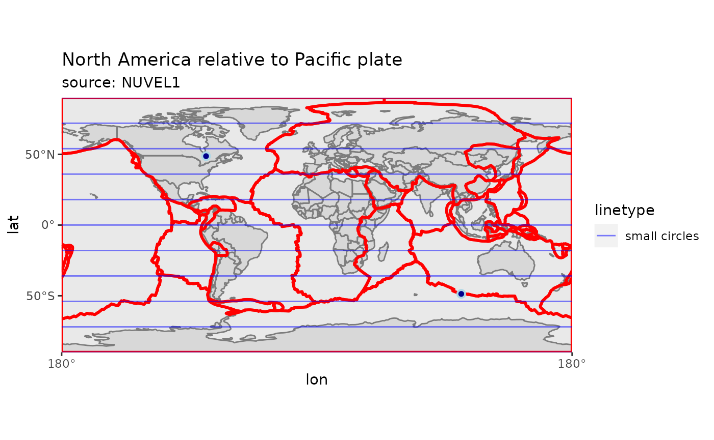
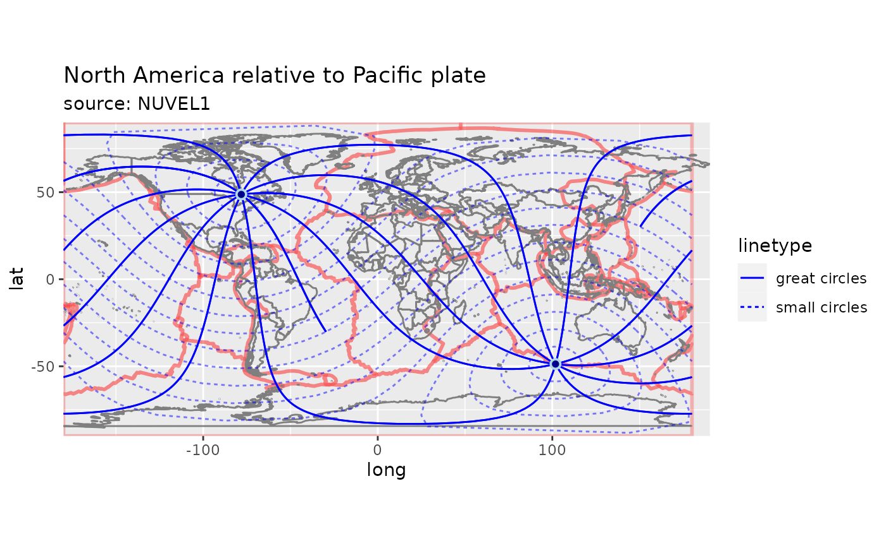
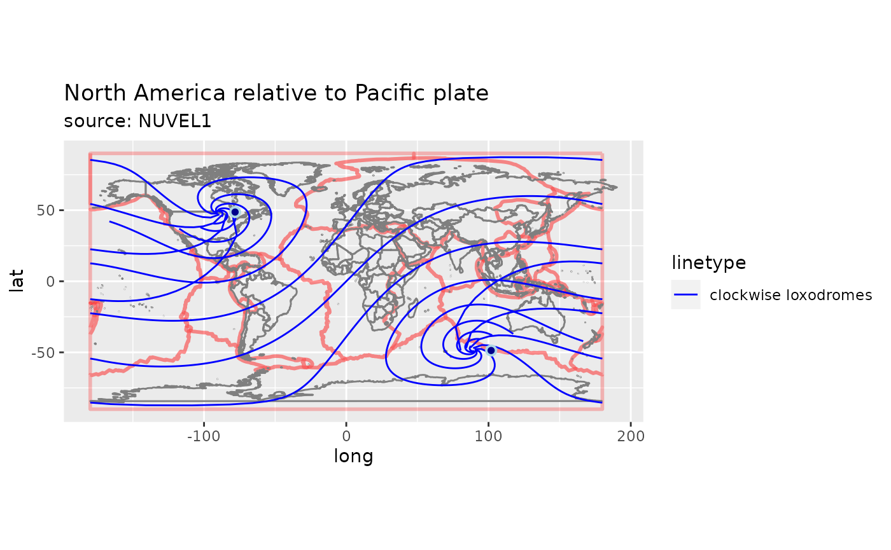

PlateTectonicStressR
Documentation of the R package PlateTectonicStressR
Tobias Stephan, PhD
Source:vignettes/PlateTectonicStressR.Rmd
PlateTectonicStressR.RmdA free and open-source R package for modeling and analyzing the direction of the maximum horizontal stress based on the empirical link between the orientation of intraplate stress and the direction of the relative motion of neighboring plates.
Model
The theory of intraplate tectonics (Wdowinski 1998) allows for calculating the first-order intraplate deformation induced by horizontal displacement of deformable plate boundaries. It is based on empirical link between the directions of relative plate motion and the displacement and deformation fields within a plate interior adjacent to three types of deformable plate boundaries: inward-, outward-, and tangential-displaced boundaries. The model predicts the direction of intraplate displacement, displacement rate, strain, and stress fields in terms of small circles, great circles, and 45° loxodromes around the pole of rotation of two adjacent plates. The principal axis of the maximum horizontal stress follows small circles for inward-displaced boundaries, great circles for outward-displaced boundaries, and loxodromes for tangential-displaced boundaries
The theory indicates that the first-order intraplate deformation is predominantly induced by horizontal forces acting on plate boundaries and by buoyancy forces that arise from lateral density variations between mid-ocean ridges and plate interiors (ridge push).
Inward, outward and tangential displaced boundaries
Inward-moving plate boundaries induce compressional horizontal tractions from the plate boundary towards the plate’s interior along the direction of relative plate motion. These compressional tractions are produced by forces related to subduction, collision, or ridge-push. Thus, stresses across convergent plate boundaries are characterized by the dominance of thrusting or strike-slip faulting (\(\sigma_1 \approx \sigma_{Hmax}\)) with \(\sigma_{Hmax}\) (maximum horizontal stress) trending parallel to the plate convergence, i.e. parallel to small-circles around the Euler pole of the relative plate motion.
Outward moving plate boundaries produce tensional tractions and displacements directed away from the plate interior. Along spreading ridges and intracontinental rifting stresses are dominated by normal faulting (\(\sigma_1 \approx \sigma_{vertical}\), \(\sigma_2 \approx \sigma_{Hmax}\)) with \(\sigma_{Hmax}\) trending perpendicular to the plate motion trajectories (i.e. along great-circles). In the case of intracontinental setting, stresses and displacements may be associated to slab-retreat, back-arc extension, or the release of the excess of gravitational potential energy stored in thickened crust through, e.g., gravitational collapse (Dalmayrac and Molnar, 1981; Tapponnier et al., 1982; Molnar and Wang-Ping Chen, 1983; Ellis and Watkinson, 1987; Gapais et al., 1992; Faccenna et al., 1997; Rey et al., 2001).
Along transform boundaries (tangential displaced boundaries), the two neighboring plates exert shear tractions tangential to the orientation of the boundary (Forsyth and Uyeda, 1975). Faulting and displacement adjacent to these plate boundaries are characterized by strike-slip parallel to the plate motion, and thus, the principal axes of maximum and minimum stress are orientated at an angle of c. 45° to the plate motion trajectory (e.g. Zoback et al., 1987; Townend and Zoback, 2004; Balfour et al., 2005). Geometrically, \(\sigma_{Hmax}\) orientation follows along 45° loxodromes which diverge ––depending on the sense of the transform boundary––clockwise or counterclockwise from the relative Euler pole and intersect both small- and great-circles at an angle of 45° (Wdowinski, 1998).
Direction of small circle at specific point and deviation of the measured stress
Load the package
library(PlateTectonicStressR)
library(ggplot2) # load ggplot libraryTo model the direction of the great and small circles and loxodromes around the Euler pole \(\vec E\) at a given point (eg. at 45°N/20°E), you need the coordinates of the Euler pole.
For example, the Euler pole has the coordinates: 90°N/0°E. Then \(\sigma_{Hmax}\) following great and small circles and loxodromes geometries can be modeled with model_shmax():
# Example:
point <- data.frame(lat = 45, lon = 20)
euler <- data.frame(lat = 90, lon = 0)
model <- model_shmax(point, euler)
print(model)
#> gc sc ld.ccw ld.cw
#> 1 0 90 135 45If there is an observed stress orientation at the point, e.g. azimuth of \(\sigma_{Hmax}\) is 90°, the deviation from the modeled stress orientations can be achieved via misfit_shmax():
deviation <- misfit_shmax(model, 90)
print(deviation)
#> dev.gc dev.sc dev.ld.cw dev.ld.ccw
#> 1 90 0 45 45Quantitative Comparison Between Predicted and Observed \(\sigma_{Hmax}\)
The normalized \(\chi^2\) test quantitively compares the predicted (model_shmax()) and observed SHmax azimuth relative to the reported \(\sigma\) standard deviation (Wdowinski 1999).
\[\begin{equation} \textrm{Norm} \chi^2 = \frac{ \sum_{i=1}^{M} \left( \frac{\alpha_i - \alpha_{predict}}{\sigma_i}\right)^2} { \sum_{i=1}^{M} \left( \frac{90}{\sigma_i} \right) ^2 } \end{equation}\]
with \(\alpha_i\) and \(\alpha_{predicted}\) are the observed and predicted directions of SHmax with respect to the pole of rotation,respectively. The \(\sigma_i\) parameter is the reported uncertainty of the observed azimuth and \(M\) is the number of observations that are used in each test.
The normalized \(\chi^2\) test yields a number in the range between 0-1 which indicates the quality of the fit. Low values of the normalized \(\chi^2\) test (\(\leq\) 0.15 indicate good agreement between predicted and observed directions. High values (\(>\) 0.7) indicate a systematic misfit between predicted and observed directions of about 90\(^{\circ}\). Random distribution of SHmax directions results in Norm \(\chi^2 = 0.33\)
The test can be run using norm_chi2(obs, prd, unc). obs is a numeric vector with the observed SHmax; prd is a vector with the predicted SHmax (vector must be of length of obs); and unc is the uncertainty of observed SHmax (either numeric vector of length of obs or a number).
data("nuvel1")
euler <-
subset(nuvel1, nuvel1$ID == "na") # North America relative to Pacific plate
point <- data.frame(lat = 45, lon = 20)
prd <- model_shmax(point, euler)
norm_chi2(obs = 90, prd$sc, unc = 10)
#> [1] 0.2790849Larger data sets
PlateTectonicStressR also handles larger files. For example, we can import the WSM2016 data:
data('wsm2016')
head(wsm2016)
#> # A tibble: 6 × 60
#> id site lat lon azi type depth quality regime locality country
#> <chr> <chr> <dbl> <dbl> <dbl> <chr> <dbl> <chr> <chr> <chr> <chr>
#> 1 wsm00001 TU31 40.3 28.2 100 FMS 14 C NF NA Turkey
#> 2 wsm00002 TU28 40.1 27.4 105 FMS 0 C SS NA Turkey
#> 3 wsm00003 TU25 39 27 87 FMS 0 C NF NA Turkey
#> 4 wsm00004 TU13 39.1 41.6 38 FMS 38 C TS NA Turkey
#> 5 wsm00005 TU12 37.8 29.3 101 FMS 16 C NF centralTu… Turkey
#> 6 wsm00006 TU60 40.1 29.4 82 FMS 15 C SS NA Turkey
#> # … with 49 more variables: date <date>, time <chr>, number <dbl>, sd <dbl>,
#> # method <chr>, s1az <dbl>, s1pl <dbl>, s2az <dbl>, s2pl <dbl>, s3az <dbl>,
#> # s3pl <dbl>, mag_int_s1 <dbl>, slopes1 <dbl>, mag_int_s2 <dbl>,
#> # slopes2 <dbl>, mag_int_s3 <dbl>, slopes3 <dbl>, pore_magin <dbl>,
#> # pore_slope <dbl>, mag_type <chr>, eq_mag <dbl>, mom <dbl>, mom_exp <dbl>,
#> # eq_avg <chr>, tot_len <dbl>, sd_weight <chr>, samp_int <dbl>, top <dbl>,
#> # bot <dbl>, no_mag_ven <dbl>, young <dbl>, poisson <dbl>, rock <chr>, …Subset of the WSM data to stress data relevant for the Plate boundary between North America and the Pacific plate at the San Andreas fault:
san.andreas <- subset(wsm2016,
wsm2016$lat >= 23 & wsm2016$lat <= 40 &
wsm2016$lon >= -126 & wsm2016$lon <= -108)Modeling the stress directions using the Euler pole of the motion of North America relative to the Pacific Pate.
data("nuvel1")
euler <- subset(nuvel1, nuvel1$ID == "na")
san.andreas.prd <- model_shmax(san.andreas, euler)
san.andreas.deviation <-
misfit_shmax(san.andreas.prd, san.andreas$azi)Combine the model results with the coordinates of the observed data
san.andreas.res <- cbind(
lat = san.andreas$lat,
lon = san.andreas$lon,
azi = san.andreas$azi,
san.andreas.prd,
san.andreas.deviation
)ggplot2::ggplot() can be used to visualize the results. The orientation of the axis can be displayed with the function geom_spoke(). The position argument position = 'center_spoke' aligns the marker symbol at the center of the point. The deviation can be color coded. deviation_norm() yields the normalized value of the deviation, i.e. values between 0 and 90°.
data('PB2002') # load plate boundary data set
ggplot(san.andreas.res) +
coord_fixed(
xlim = range(san.andreas.res$lon),
ylim = range(san.andreas.res$lat),
expand = FALSE
) +
borders() +
geom_path(
data = broom::tidy(PB2002),
aes(long, lat, group = group),
color = "red",
lwd = 3,
alpha = .5
) +
geom_spoke(
aes(
x = lon,
y = lat,
radius = 1,
angle = pracma::deg2rad(-azi + 90),
color = deviation_norm(dev.ld.ccw)
),
position = "center_spoke"
) +
scale_color_continuous(
type = "viridis",
limits = c(0, 90),
name = "|Deviation| in °",
breaks = seq(0, 90, 22.5)
)
#> Regions defined for each Polygons
The map shows generally low deviation of the observed \(\sigma_{Hmax}\) directions from the modeled stress direction using counter-clockwise 45° loxodromes. The normalized \(\chi^2\) test tests the fit between the modeled \(\sigma_{Hmax}\) orientation the observed stress direction considering the reported uncertainties of the measurement.
san.andreas$unc <-
quantise_wsm_quality(san.andreas$quality) # convert the WSM quality ranking into the standard deviation of the measurement
norm_chi2(obs = san.andreas$azi,
san.andreas.prd$ld.ccw,
unc = san.andreas$unc)
#> [1] 0.06148918The value is \(\leq\) 0.15, indicating a significantly good fit of the model. Thus, the tractions of the transform plate boundary explain the stress direction of the area.
Plotting Pole of Rotation Grids
Small Circles
Function eulerpole_smallcircles(x, gridsize) returns Small circles as SpatialLinesDataFrame by giving a data.frame of the Euler pole coordinates in lat and lon (x) and the small circle distances (sm).
For example the small-circles around the Euler pole of the relative motion of North America relative to the Pacific plate (from the NUVEL1 model):
data("nuvel1")
euler <-
subset(nuvel1, nuvel1$ID == "na") # North America relative to Pacific plate
euler$angle <- euler$rate To plot the small-circles with ggplot, I recommend to transform the SpatialLinesDataFrame into a data.frame with broom::tidy():
euler.sm <- eulerpole_smallcircles(euler)
ggplot() +
coord_fixed(expand = FALSE) +
geom_path(
data = broom::tidy(PB2002),
aes(long, lat, group = group),
color = 'red',
lwd = 1,
alpha = .25
) +
borders() +
labs(title = "North America relative to Pacific plate", subtitle = "source: NUVEL1") +
geom_path(
data = broom::tidy(euler.sm),
aes(long, lat, group = group, lty = "small circles"),
color = "blue"
) +
geom_point(
data = euler,
aes(lon, lat),
shape = 21,
colour = "lightblue",
size = 2,
fill = "darkblue",
stroke = 1
) +
geom_point(
data = euler,
aes(lon + 180, -lat),
shape = 21,
colour = "lightblue",
size = 2,
fill = "darkblue",
stroke = 1
)
#> Regions defined for each Polygons
Great Circles
Great circles are lines that cut the small circles at 90\(^{\circ}\) and the Euler pole. Function eulerpole_greatcircles(x, n) returns great circles as SpatialLinesDataFrame by giving a data.frame of the Euler pole coordinates in lat and lon (x) and the number of great circles gm, or the great circle angles (360/d).
euler.gm <- eulerpole_greatcircles(euler)
ggplot() +
coord_fixed(expand = FALSE) +
geom_path(
data = broom::tidy(PB2002),
aes(long, lat, group = group),
color = "red",
lwd = 1,
alpha = .25
) +
borders() +
labs(title = "North America relative to Pacific plate", subtitle = "source: NUVEL1") +
geom_path(
data = broom::tidy(euler.sm),
aes(long, lat, group = group, lty = "small circles"),
color = "blue",
alpha = .5
) +
geom_path(
data = broom::tidy(euler.gm),
aes(long, lat, group = group, lty = "great circles"),
color = "blue"
) +
geom_point(
data = euler,
aes(lon, lat),
shape = 21,
colour = "lightblue",
size = 2,
fill = 'darkblue',
stroke = 1
) +
geom_point(
data = euler,
aes(lon + 180, -lat),
shape = 21,
colour = "lightblue",
size = 2,
fill = "darkblue",
stroke = 1
)
#> Regions defined for each Polygons
Loxodromes
Loxodrome (also called Rhumb Line) is a curve cutting the small circles at a constant angle. Thus, small and great circles are 0\(^{\circ}\) and 00\(^{\circ}\) loxodromes, respectively.
Function eulerpole_loxodromes(x, n) returns loxodromes as SpatialLinesDataFrame by giving a data.frame of the Euler pole coordinates in lat and lon (x) and the angle between the loxodromes, the direction, and the sense.
euler.ld <-
eulerpole_loxodromes(
x = euler,
angle = 45,
ld = 10,
sense = "sinistral"
)
ggplot() +
coord_fixed(expand = FALSE) +
geom_path(
data = broom::tidy(PB2002),
aes(long, lat, group = group),
color = "red",
lwd = 1,
alpha = .25
) +
borders() +
labs(title = "North America relative to Pacific plate", subtitle = "source: NUVEL1") +
geom_path(
data = broom::tidy(euler.ld),
aes(long, lat, group = group, lty = "clockwise loxodromes"),
color = "blue"
) +
geom_point(
data = euler,
aes(lon, lat),
shape = 21,
colour = "lightblue",
size = 2,
fill = "darkblue",
stroke = 1
) +
geom_point(
data = euler,
aes(lon + 180, -lat),
shape = 21,
colour = "lightblue",
size = 2,
fill = "darkblue",
stroke = 1
)
#> Regions defined for each Polygons